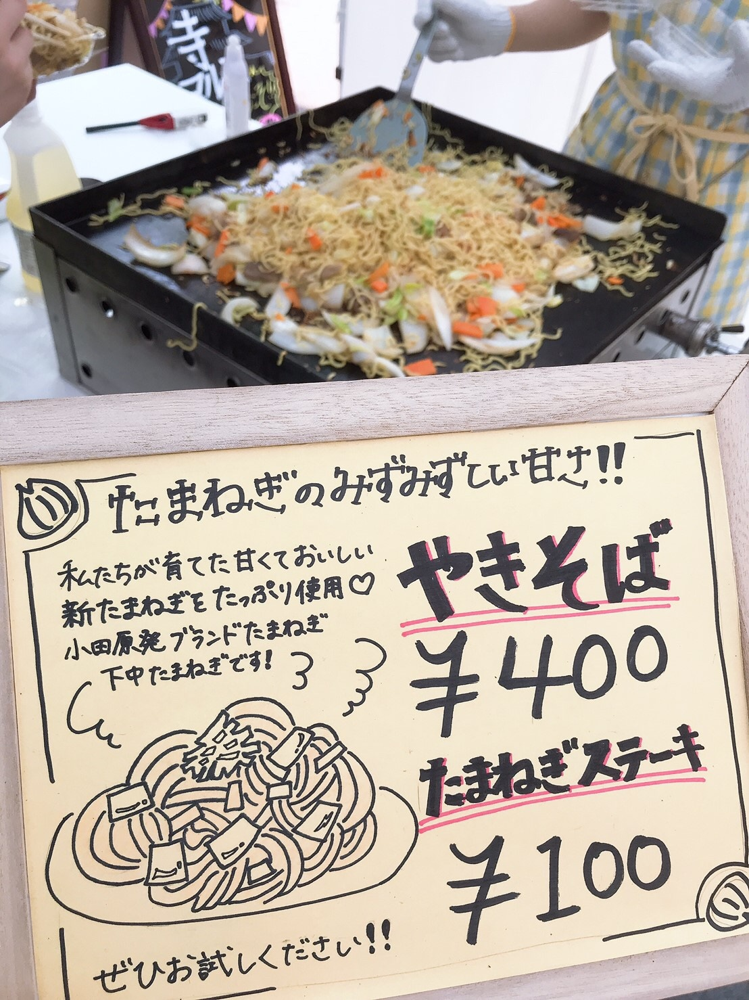
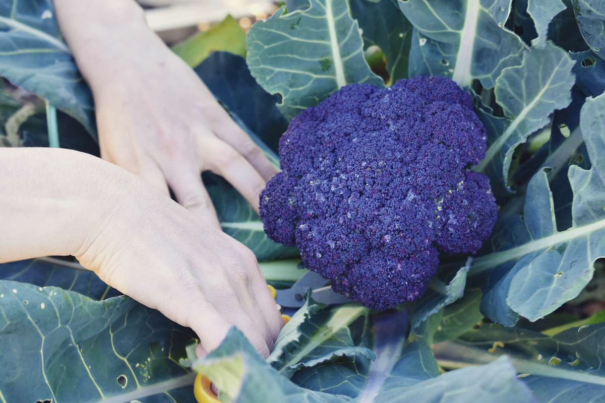

Activities
生産と消費の両方に関わる活動をしています。
禅龍寺農園
神奈川県小田原の禅龍寺で畑をお借りし、自分たちで農産物を育てています。放棄耕作地だった土地を開墾することから始め、あきさわ園の秋澤さんご協力のもとソバ・タマネギ・ジャガイモ・サツマイモなどを育てました。
学園祭
年２回開催される東京大学の学園祭「五月祭・駒場祭」にお店を出店しています。
自分たちで育てた野菜を使った料理（玉ねぎ焼きそば・大学いも・サツマイモたい焼き）や加工品（サツマイモのきんつば・干し芋）、お世話になっている農家さんの加工品などを販売しています。
食品加工
加工班を創設し，収穫物の加工にも取り組んでいます。2019年は，和菓子屋さんや餡屋さん，農家さんなどの協力のもと，サツマイモの加工に挑戦しました。（サツマイモたい焼き(サツマイモを使った餡)，サツマイモきんつば，干し芋）
マルシェ
生産者のこだわりや想いを伝えるべく、外部のイベントに不定期でマルシェを出店しています。「お陰さまの精神」の場でもある「お寺」でマルシェを行う新しい取り組みもしています。
ミニ菜園
弥生キャンパス内の畑を借りて，果菜類や葉菜類，根菜類など色々な野菜を育てています。研究に疲れた(?)メンバーが癒しを求めて畑に集います。
援農

禅龍寺農園の管理をお手伝いしていただいている秋澤さんのあきさわ園で、定期的にお手伝いをさせていただいています。農家さんのお仕事に触れられる貴重な機会です。
合宿
年1〜2回程度，合宿を行なっています。合宿では，農作業はもちろんのこと，農家さんへの訪問なども行なっています。メンバー間の親睦も深まる楽しいイベントです。
その他
有志での活動も行なっています。農大の学園祭にいったり，他大のマルシェにお邪魔したり，登山をしたり...と学年の枠を超えて交流しています。